SỔ TAY VẬN HÀNH HỆ THỐNG /lite 操作说明书 · Operations Manual
Hệ thống vận hành: https://choice-vn-crm.duckdns.org/lite?v=7c719566190d
Đối tượng: Nhân viên nhập liệu · Quản lý nhà máy · Kế toán · Quản trị viên
Ngôn ngữ tài liệu: Tiếng Việt (chính) + Trung / Anh đối chiếu
Phạm vi: Board · Nhật ký · Sản xuất · Lắp đặt · Phê duyệt · Thư viện · Người dùng Không bao gồm: Tài chính (Fin) & Quyền lợi cổ đông (Equity) — dữ liệu nhạy cảm.
Ngày biên soạn: 25-10-2026 · Dữ liệu minh họa đã ẩn thông tin thật
MỤC LỤC · 目录 · CONTENTS
Chương 1 — Tổng quan & Đăng nhập
Chương 2 — Bảng điều khiển (Board)
Chương 3 — Nhật ký công việc (Work Log)
Chương 4 — Quản lý sản xuất: Danh sách nhà máy
Chương 5 — Tab A: Tổng quan nhà máy
Chương 6 — Tab B: Kế hoạch sản xuất
Chương 7 — Tab C: Lao động & Thời tiết hàng ngày ★
Chương 8 — Tab D: Kho nguyên liệu & Nhập hàng ★
Chương 9 — Tab E: Sản xuất hàng ngày ★
Chương 10 — Tab H: Kho thành phẩm & Xuất hàng
Chương 11 — Tab F: Thiết bị & Sự cố
Chương 12 — Quản lý lắp đặt (Installation)
Chương 13 — Trung tâm phê duyệt (Approvals)
Chương 14 — Thư viện & Người dùng
Chương 15 — Bảo vệ dữ liệu & Quy trình đầu‑cuối
Chương 16 — Hỏi đáp & Xử lý sự cố
Chương 17 — Bài kiểm tra nhanh
Phụ lục A — Thuật ngữ 3 ngôn ngữ
Phụ lục B — Tóm tắt thao tác nhanh
Phụ lục C — Mẫu nhật ký thực hành
Chương 1 — Tổng quan & Đăng nhập 第1章 总览与登录 / Chapter 1 — Overview & Login
Mục tiêu: Truy cập đúng hệ thống vận hành và đăng nhập thành công. 目标：进入正确的运营系统并成功登录。
Hệ thống CHOICE SLATS là một ứng dụng web thống nhất. Toàn bộ thao tác vận hành (sản xuất, lắp đặt, nhập hàng, phê duyệt…) nằm trong ứng dụng /lite tại đường dẫn:
Giá vật liệu: xu hướng thép, xi măng, cát, đá (○ Demo).
Trung tâm phê duyệt: số chờ duyệt (待我审批 / 我发起的 / 全部记录).
Chương 3 — Nhật ký công việc (Work Log) 第3章 工作日志 / Chapter 3 — Work Log
Mục tiêu: Xem nhanh trạng thái và sản lượng tích lũy của mọi dự án. 目标：速览各项目状态与累计产量。
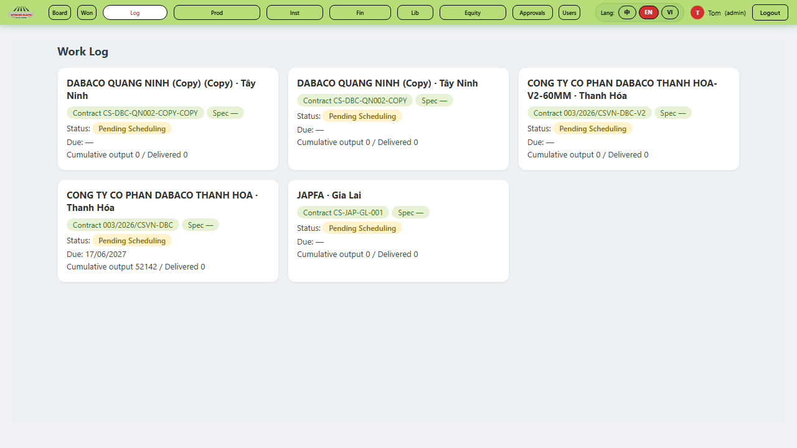
Hình 3‑1. Nhật ký công việc — trạng thái & sản lượng tích lũy
Work Log liệt kê từng dự án: Hợp đồng, Trạng thái (vd Pending Scheduling), Hạn (Due), và Sản lượng tích lũy / Đã giao (Cumulative output / Delivered). Đây là nơi giám sát tổng quát trước khi vào từng nhà máy ở Chương 4.
Chương 4 — Quản lý sản xuất: Danh sách nhà máy 第4章 生产管理·工厂列表 / Chapter 4 — Production Management
Mục tiêu: Hiểu quy tắc "mỗi dự án = một nhà máy" và mở đúng nhà máy. 目标：理解“每个项目=一个工厂”并打开正确工厂。
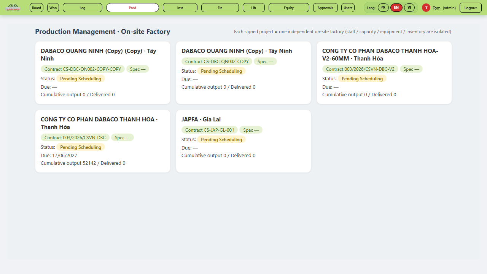
Hình 4‑1. Quản lý sản xuất — mỗi dự án đã ký = một nhà máy độc lập
Nguyên tắc cốt lõi: "Production Management · On‑site Factory — mỗi dự án đã ký = một nhà máy độc lập"; nhân sự / công suất / thiết bị / tồn kho của mỗi nhà máy hoàn toàn tách biệt (cách ly dữ liệu).
Chọn mục Prod trên thanh nav → hiện danh sách nhà máy.
Mỗi dòng: tên dự án, hợp đồng, trạng thái, Cumulative output / Delivered.
Nhấn vào dự án (hàm prod_open('<id>')) để mở nhà máy → xuất hiện 7 thẻ (Tab A‑F, H).
Chỉ những dự án được cấp quyền mới hiển thị. Không thấy dự án? Báo quản trị viên (tom) cấp quyền "Hiển thị dự án".
Chương 5 — Tab A: Tổng quan nhà máy 第5章 A标签·工厂概览 / Chapter 5 — Factory Overview
Mục tiêu: Khai báo thông tin cơ bản & cấu hình sàn bê tông của nhà máy. 目标：填写工厂基础信息与混凝土漏粪板配置。
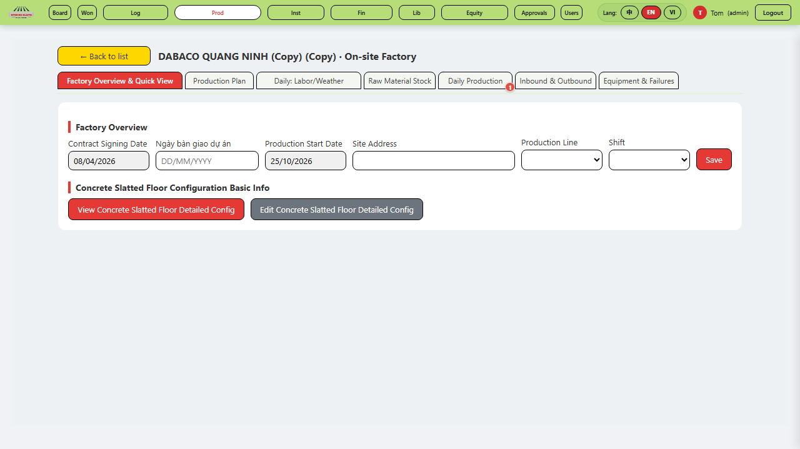
Hình 5‑1. Tab A — Tổng quan & cấu hình nhà máy
Trường
Ý nghĩa
Mã (id)
Contract Signing Date
Ngày ký hợp đồng
pa_contract_date
Ngày bàn giao dự án
Ngày bàn giao (handover)
pa_due_date
Production Start Date
Ngày bắt đầu sản xuất
pa_start_prod
Site Address
Địa chỉ công trường
pa_addr
Production Line
Số dây chuyền: 1 / 2 / 3 / 4 lines
pa_cap
Shift
Ca làm: 1 / 2 ca mỗi ngày
pa_shift
Sau khi điền → nhấn Save. Phần Concrete Slatted Floor Configuration cho phép xem / sửa cấu hình chi tiết sàn bê tông (kích thước, thông số).
Chương 6 — Tab B: Kế hoạch sản xuất 第6章 B标签·生产计划 / Chapter 6 — Production Plan
Mục tiêu: Hiểu bảng nhu cầu vật liệu & lập kế hoạch tồn kho. 目标：理解物料需求表并制定库存计划。
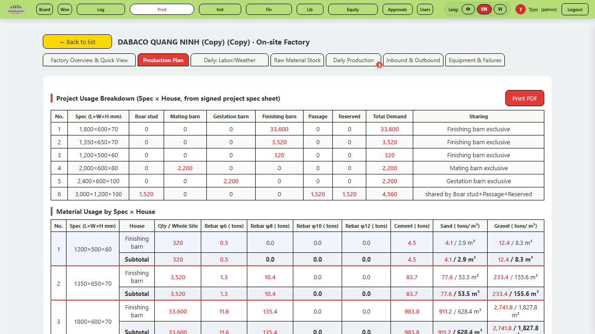
Hình 6‑1. Tab B — Kế hoạch sản xuất & nhu cầu vật liệu
Tab B tính toán tự động từ bản spec đã ký:
Project Usage Breakdown (Spec × Chuồng): mỗi quy cách (L×W×H mm) tương ứng số lượng từng loại chuồng (Boar stud / Mating / Gestation / Finishing barn / Passage / Reserved).
Material Usage by Spec × House: lượng thép φ6/φ8/φ10/φ12 (tấn), xi măng, cát, đá theo từng quy cách.
Production Aggregate Inventory Plan: số ngày tồn kho cho thép/xi măng/cát/đá; kế hoạch Slats/day & Production days từng quy cách.
Người lập kế hoạch nhập pg_sd_rebar / pg_sd_cement / pg_sd_sand / pg_sd_gravel (số ngày tồn), pg_rate_0..5, ngày chuẩn bị pg_prep_start/end, ưu tiên pg_priority → Save Inventory Plan.
Chương 7 — Tab C: Lao động & Thời tiết hàng ngày ★ 第7章 C标签·每日人工与天气 / Chapter 7 — Daily Labor & Weather
Mục tiêu: Ghi nhận đúng số nhân công & thời tiết mỗi ngày (thao tác nhập liệu trọng tâm). 目标：每天正确记录人数与天气（核心录入）。
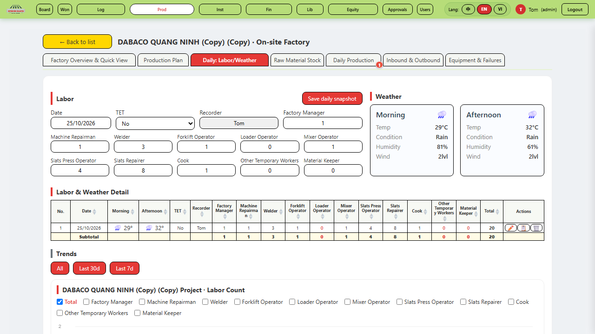
Hình 7‑1. Tab C — Nhật ký lao động & thời tiết (11 vai trò)
7.1 Các bước nhập 录入步骤
Chọn Date (≤ hôm nay).
Điền TET (No/Yes) và Recorder (người ghi chép).
Nhập số lượng từng vai trò (11 vị trí):
Factory Manager, Machine Repairman, Welder, Forklift Operator, Loader Operator, Mixer Operator, Slats Press Operator, Slats Repairer, Cook, Other Temporary Workers, Material Keeper.
Nhấn Save daily snapshot → lưu ngày, chuyển sang chế độ chỉ đọc.
7.2 Bảng & Xu hướng 明细与趋势
Sau khi lưu, Labor & Weather Detail ghi lại từng ngày; Trends (All / Last 30d / Last 7d) vẽ biểu đồ số công nhân và Temp & Humidity. Dòng tổng (Total) tự cộng các vai trò.
Số liệu thời tiết lấy từ hệ thống hoặc do người ghi chép nhập; nhất quán sáng/chiều để biểu đồ chính xác.
Chương 8 — Tab D: Kho nguyên liệu & Nhập hàng ★ 第8章 D标签·原料库存与收货 / Chapter 8 — Raw Material Stock & Receipt
Mục tiêu: Lập phiếu nhập hàng đa dòng, 3 tiền tệ, gửi phê duyệt. 目标：制作多行收货单（三币种）并提交审批。
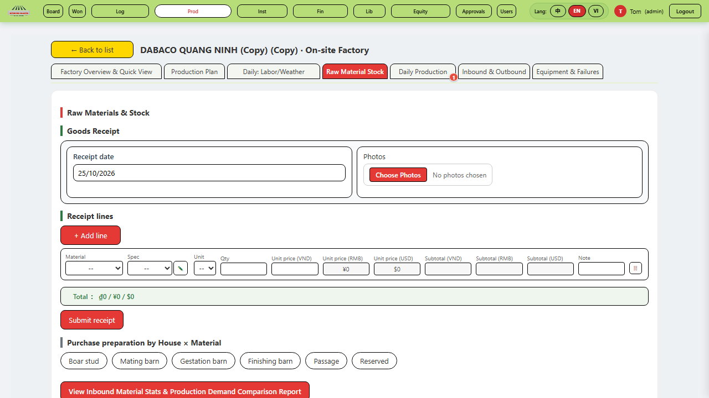
Hình 8‑1. Tab D — Nhập hàng nguyên liệu (đa dòng, 3 tiền tệ)
8.1 Các bước 步骤
Receipt date: ngày nhập hàng.
Photos: chọn ảnh chụp hàng nhận (Choose Photos).
+ Add line: thêm dòng vật liệu. Chọn Material (HP/VY Rebar φ6–φ12, Cát vàng, Xi măng HT/HH, Đá), Spec, Unit, Qty.
Nhập Unit price VND / RMB / USD — hệ thống tự tính Subtotal mỗi dòng và Total ₫ / ¥ / $.
Nhấn Submit receipt → chuyển đến Trung tâm phê duyệt (Chương 13).
RMB/USD là quy đổi hiển thị từ đơn giá VND; chỉ cần nhập đúng đơn giá VND và số lượng.
8.2 Đối chiếu trước duyệt 提交前核对
Khớp tên vật liệu & quy cách đã lưu.
Thành tiền = Đơn giá VND × Số lượng; kiểm số lượng khớp ảnh.
"Purchase preparation by House × Material" giúp đối chiếu nhu cầu chuồng.
Chương 9 — Tab E: Sản xuất hàng ngày ★ 第9章 E标签·每日生产 / Chapter 9 — Daily Production
Mục tiêu: Ghi nhận sản lượng sản xuất thực tế mỗi ngày. 目标：每日记录实际产量。
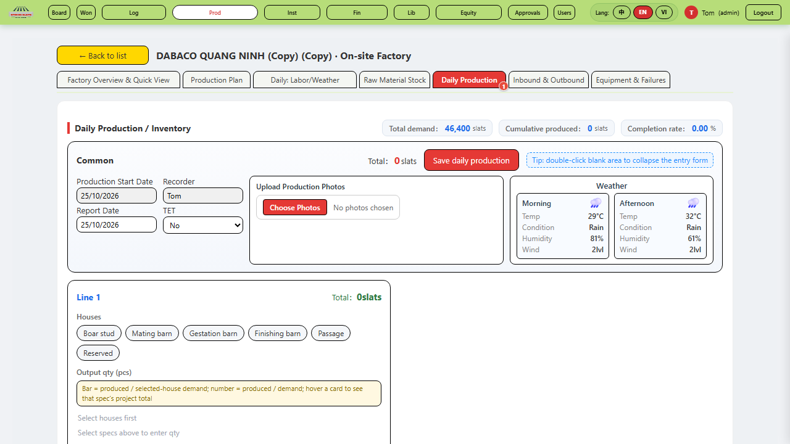
Hình 9‑1. Tab E — Sản xuất hàng ngày (chọn chuồng, nhập số lượng theo dây chuyền)
9.1 Quy tắc then chốt 关键规则
Tổng nhu cầu (vd 46,400 slats) & Sản lượng tích lũy / Tỉ lệ hoàn thành hiển thị đầu trang.
Chọn Houses (Boar stud / Mating / Gestation / Finishing barn / Passage / Reserved) và Spec tương ứng.
Nhập Output qty (pcs) cho từng Line 1–4.
Weather (sáng/chiều), TET, Recorder, Upload Production Photos.
Nhấn Save daily production → cập nhật tồn kho & biểu đồ.
Mẹo: nhấn đúp khoảng trắng để thu gọn ô nhập. Thanh "Bar = produced / demand" giúp kiểm tra ngay.
9.2 Ví dụ minh họa (dữ liệu ẩn) 示例
Dây chuyền
Chuồng
Spec (mm)
Số lượng (tấm)
Line 1
Finishing barn
1,800×600×70
320
Line 2
Finishing barn
1,350×650×70
150
Line 3
Gestation barn
2,400×600×100
200
Chương 10 — Tab H: Kho thành phẩm & Xuất hàng 第10章 H标签·成品库存与出库 / Chapter 10 — Finished Goods & Outbound
Mục tiêu: Theo dõi tồn kho thành phẩm và xuất hàng đến lắp đặt. 目标：跟踪成品库存与发货至安装。
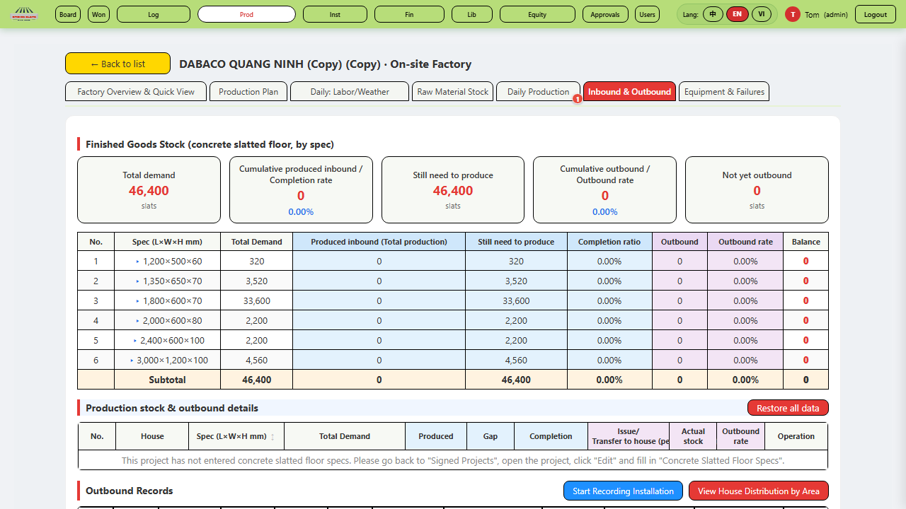
Hình 10‑1. Tab H — Kho thành phẩm & xuất hàng (Outbound)
Tab H hiển thị:
Total demand / Cumulative produced inbound / Completion rate / Still need.
Cumulative outbound / Outbound rate / Not yet outbound theo từng Spec.
Outbound Records: nhấn Start Recording Installation để ghi xuất hàng: Recorder, Date, Morning/Afternoon, Outbound Qty, From House, Slat Spec, Delivery Area, Moved to House, Installed qty.
Quy tắc: xuất kho ≤ sản xuất; tồn kho không âm. Số liệu xuất hàng là cầu nối sang module Lắp đặt (Chương 12).
Chương 11 — Tab F: Thiết bị & Sự cố 第11章 F标签·设备与故障 / Chapter 11 — Equipment & Failures
Mục tiêu: Cấu hình dây chuyền & báo cáo sự cố thiết bị. 目标：配置产线并上报设备故障。
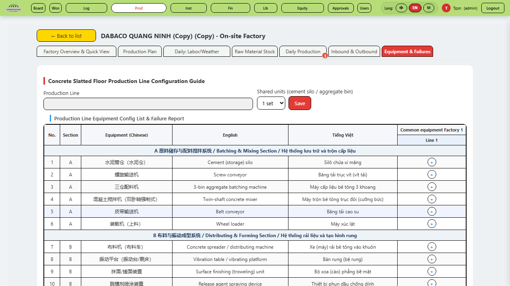
Hình 11‑1. Tab F — Cấu hình thiết bị & báo cáo sự cố
Production Line Configuration Guide: chọn Line, Shared units (1–2 sets) → Save.
Equipment Config List: 21 thiết bị chia 6 khu (A trộn liệu, B định hình, C tháo khuôn, D vận chuyển, E dưỡng hộ, F điện điều khiển), mỗi thiết bị có tên 3 ngôn ngữ (Trung/Anh/Việt).
Equipment Failure Report & Downtime Fault Summary: ghi nhận tần suất & thời gian dừng máy.
Chương 12 — Quản lý lắp đặt (Installation) 第12章 安装管理 / Chapter 12 — Installation
Mục tiêu: Theo dõi tiến độ lắp đặt theo dự án. 目标：按项目跟踪安装进度。
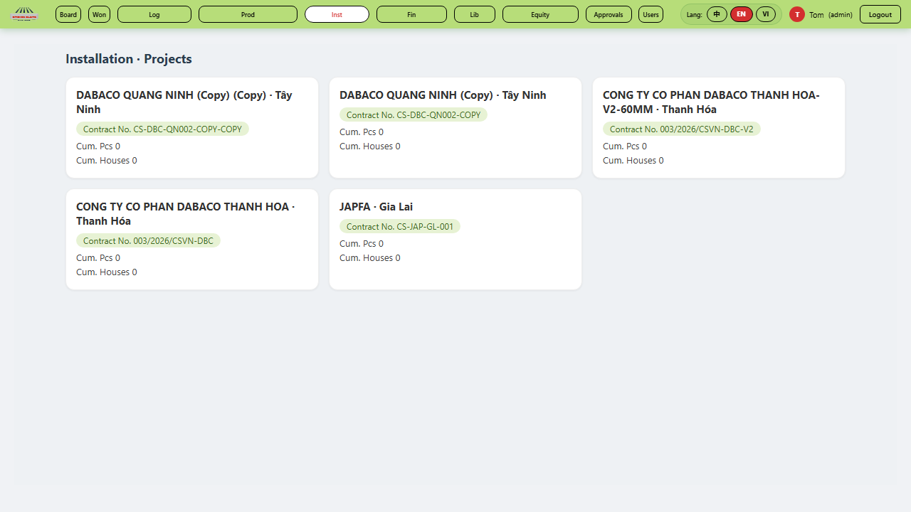
Hình 12‑1. Quản lý lắp đặt — tiến độ Cum. Pcs / Cum. Houses
Module Inst liệt kê dự án với Cum. Pcs (tấm tích lũy) và Cum. Houses (chuồng tích lũy). Đây là bảng tổng hợp tiến độ; số liệu lắp đặt thực tế được nạp từ Tab H (Outbound → Installed qty) và Tab C (lao động lắp đặt) ở Chương 7.
Lao động lắp đặt & thời tiết được nhập ở Tab C; số lượng lắp đặt (installed qty) được ghi ở Tab H khi xuất hàng đến công trường.
Chương 13 — Trung tâm phê duyệt (Approvals) 第13章 审批中心 / Chapter 13 — Approvals
Mục tiêu: Duyệt các yêu cầu (đặc biệt phiếu nhập hàng từ Tab D). 目标：审批请求（尤其D标签收货单）。
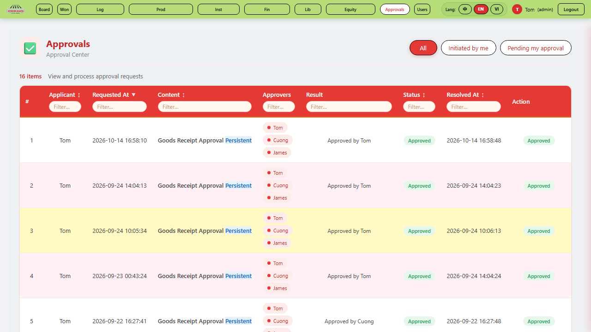
Hình 13‑1. Trung tâm phê duyệt — danh sách chờ duyệt
Phạm vi: All / Initiated by me / Pending my approval.
Kịch bản: (1) Tab D lập phiếu nhập hàng → (2) Trung tâm phê duyệt duyệt → nhập kho → (3) Tab E ghi sản xuất → (4) Tab H xuất hàng đến công trường → (5) Module Inst ghi lắp đặt. Tab C (lao động/thời tiết) đi cùng mỗi ngày.
Chương 16 — Hỏi đáp & Xử lý sự cố 第16章 常见问题与排错 / Chapter 16 — FAQ & Troubleshooting
Mục tiêu: Giải đáp thắc mắc và xử lý lỗi thường gặp. 目标：解答疑问并处理常见错误。
16.1 FAQ 常见问题
H: Không thấy nhà máy? Đ: Chưa được cấp quyền dự án → báo tom.
H: Tab sản xuất không mở được? Đ: Phải mở dự án từ danh sách (Chương 4) rồi mới hiện Tab A–F, H.
H: Gửi phê duyệt xong có sửa được không? Đ: Trước khi duyệt có thể sửa; sau duyệt đã nhập kho.
H: Xuất hàng bị từ chối? Đ: Số xuất vượt sản lượng tồn → kiểm tra Tab H.